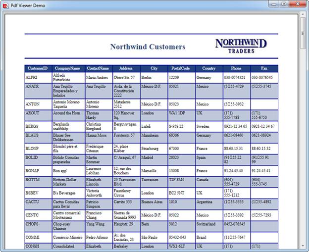

Inorder to view PDF without the toolstrip, make use of PdfDocumentView control instead of PdfViewerControl. Other features and options are similar to PdfViewerControl.
|
[C#] PdfDocumentView pdfDocumentView1 = new PdfDocumentView(); pdfDocumentView1.Load(@"Template.pdf"); |
|
[VB.NET] Dim pdfDocumentView1 As New PdfDocumentView() pdfDocumentView1.Load("Template.pdf") |
The following is the image of PDF document viewed in PdfDocumentView.

Figure 9: PDF displayed in PdfDocumentView